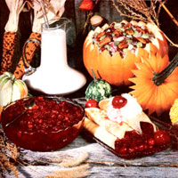

The "ruby of the bog" will add a burst of color and a bundle of flavor to your holiday fare.
Early autumn, when the often warm and hazy days are followed by cool nights and frosty morn ings, heralds the end of the har vest season. And a bit later, as the trees blaze into a brilliant display of color, na ture puts its finishing touches on the plump crimson berries in local cranberry bogs. In our household, the appearance of the bright berries-from late September and on through the drowsy Indian summer days of October and November-is the signal to don old clothing, pull on water proof galoshes, grab some buckets, and embark on our annual cranberry-picking outing (and begin dreaming of the mouth watering meals that the little ruby fruits will contribute so much to).
This autumn excursion-which has become a regular tradition in our family-is actually just a continuation of a custom once practiced by our forebears. The cranberry has played a rich part in this country's heritage. The tart fruit was an important ingredient in pemmican, the "convenience food" carried by many native Americans, and its juice was used as a dye for clothing and blankets. Several tribes also made cranberry poultices, with which to draw venom from poisoned-arrow wounds. In addition, the fruit was sometimes offered as a symbol of peace (it's believed that the Indians presented the Pilgrims with gifts of cranberries).
And European settlers were quick to recognize the excellent qualities of the berry. Water-packed barrels of the fruit (which we now know to be rich in vitamin C) were taken on board oceangoing ships to help prevent scurvy. Early colonists also gave the cranberry its common name: It seems that they thought the delicate pink blossoms resembled the nodding heads of cranes . . . and "crane berry" was later shortened to the moniker we use today.
Foraging for wild cranberries continued to be a common autumn activity as the Pilgrim settlements grew into thriving towns. The fruits began to ripen at the end of the growing season, and-as a celebration of the harvest-whole communities would assemble at peat bogs and gather the crimson fruit as one of the last social events before winter's chill set in for good. (In fact, cranberry picking was so popular that many villages actually levied a fine on anyone who was caught harvesting the fruit before the season was officially open!)
Nowadays, this member of the Ericaceae (heath) family is cultivated-in Massachusetts, New Jersey, Wisconsin, Oregon, and Washington-in peat swamps which have been drained of water, leveled, spread with a thin layer of sand, and planted with cuttings of the cranberry vine. However, you can recapture the festive atmosphere of early pioneer days by foraging for wild cranberries-as our family does-and using your harvest of the colorful crop to create some downright deli cious additions to holiday meals!
The large American cranberry (Vaccinium macrocarpon) grows wild throughout the northeastern United States and westward to Minnesota and Arkansas. Here on the West Coast, though. the Pacific cran berry (V. oxycoccus) is more common in the wild. Although it's smaller than the domesticated variety, we think the forageable fruit has an especially delightful tangy flavor. You can find the red or mottled red-and-white berries of this low shrublike creeping plant in areas with acid soil . . including sphagnum moss bogs and wet, woody river banks. [EDITOR'S NOTE: Be certain, of course, to consult a wild foods guide or to accompany an experienced cranberry hunter on foraging expeditions.] And once you've collected a bucketful of the ruby beauties (or, if necessary, bought a supply of them), try the following recipes ... to fill your kitchen with a bonanza of cranberry creations!
This whole-cranberry sauce is a favorite treat at our supper table year round, and is sure to add cheer to any family feast. Start by combining 1-1/2 cups of mild honey and 1/2 cup of water in a saucepan. [EDITOR'S NOTE: MOM's recipe testers found this sauce to be quite sweet. If you're partial to a tarter flavor, simply use less honey (and more water) until you've achieved the desired taste.]
Next, wash and pick over 4 cups (1 pound) of fresh cranberries (discard any green or rotten specimens, but keep in mind that the color differences of ripe berries, ranging from mottled red and white to a dark ruby hue, often indicate the variety-not the age-of the fruit) and add them to the honey syrup.
Bring the uncovered mixture to a boil and simmer it, without stirring, for 10 to 15 minutes . . . until the skins of the berries pop (you'll actually be able to hear the miniature explosions) and the sauce thickens. Then, using a large spoon, skim off any froth that formed during the boiling process, pour the cranberries into a serving dish (we always use a cutglass bowl so that the scarlet color will shimmer through the facets), and chill the condiment until it's firm. Just before setting it on the table, sprinkle a tablespoon of grated orange rind over the surface.
This recipe makes about a quart of sauce, but you'll want to cook up enough to use in other recipes, too. (You can preserve any surplus by spooning it into hot sterilized canning jars, sealing the containers, and processing them for 10 minutes in a boiling water bath.)
Not many folks can resist the delicate flavor of a crêpe dessert, and this one will have your crowd begging for more To prepare 14 to 16 of the French pancakes, sift together-into a large bowl-1 cup of whole wheat pastry flour, 2 teaspoons of baking powder, and 1 teaspoon of salt. Put the mixture aside while you combine 4 beaten eggs, 1-1/3 cups of milk, and 2/3 cup of water. Then make a well in the dry ingredients, pour in the liquid, and stir the mix until the batter is smooth (it will be quite thin).
Next, heat 1 tablespoon of unrefined oil in a 5" skillet and add a small quantity of batter, tilting the pan so that the mixture forms a thin coating over the bottom. Cook the crepe over moderate heat until it's browned (one minute should be plenty), flip the pancake, and briefly cook the other side. Turn the finished crepe out onto a toweldraped baking sheet, cover it with another tea cloth so that it'll retain its moisture, and place the tray in a warm (200°F) oven while you continue cooking the rest of the batter. Prepare each crepe in the same manner. always remembering to add one tablespoon of oil to the skillet before pouring in the batter.
To make the filling, add 1/4 cup of butter to 2 cups of cranberry sauce, and melt the concoction over medium heat. Then dollop several tablespoons of the pipinghot sweet onto each crêpe, and roll the pancake into the characteristic cylindrical shape. Serve the dessert garnished with whipped cream or yogurt topped with fresh, sliced cranberries ... or-for an especially dramatic effect-pour a bit of brandy over ungarnished filled crepes and touch a match to the spirits!
This easy-to-make salad can serve as a cool companion to a hot 'n' hearty holiday meal. To prepare the dish, combine 3 cups of sliced apples (leave the skins on for added color), 1 cup of finely chopped walnuts, and 1/2 cup of minced celery. Set the mixture aside while you stir together 3/4 cup of yogurt, 1/4 cup of chopped raw cranberries, 2 tablespoons of mild honey, 1 teaspoon of salt, and the juice of half a lemon. Then simply blend this dressing with the other ingredients and serve the salad on a bed of fresh lettuce or spinach.
The holidays wouldn't be complete without a bit of eggnog . . . and the bog berry can help you produce a pleasant variation to the traditional beverage. Beat 2 egg yolks until they're light and frothy, and slowly add 1 cup of milk (or cream) and 1/2 cup of strained cranberry sauce (use a food mill, or a strainer and a large spoon, to eliminate the skins). Next, whip the whites of 4 eggs until they form soft peaks . . . add 1 tablespoon of mild honey and teat the mixture until it's stiff. Then gently fold the egg whites into the liquid ingredients, serve up the colorful foaming thirst quencher in frosted mugs, and sprinkle each of the four portions with freshly ground nutmeg.
I hope your family will not only welcome these new additions to the customary holiday tare, but also find-as my brood has-that there's no better way to capture a bit of the festive spirit of yesterday than to tramp through the woods on a crisp autumn morning . . . in search of the wild cranberry!
EDITOR'S NOTE.' If you're in the market for a good, detailed wild foods field guide, MOTHER's foragers strongly recommend Lee Peterson's A Field Guide to Edible Wild Plants of Eastern and Central North America ($10.95). And alter yon bring those berries home, you ran preserve some of the surplus harvest by using the jam recipes in Putting It Up With Honey: A Natural Foods Canning and Preserving Cookbook by Susan Geisopf ($6.95).
Both books can be found in libraries and bookstores, or ordered-for the prices listed plus 95 cents shipping and handling-from Mother's Bookshelf, P.O. Box 70, Hendersonville, North Carolina. 28791.
|
 |
|
|